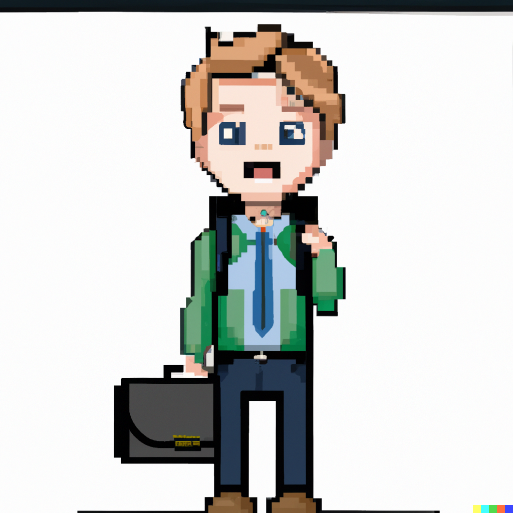

I am passionate about IT and more specifically cybersecurity,
eager to discover new things either for professional purposes and for my personal life,
and I am a traveler and a dreamer.


My graduation year! I went to Sweden for an exchange program, to Halmstad University! Then I did a 10 weeks internship at KPMG Belgium and I wrote my thesis about IoT security.

Many projects were done during this year, where I learned new technologies such as Docker and Ansible. I also got better in Cryptography, Risk analysis, and programming.

My graduation year! This year I learned Cloud Computing on Microsoft Azure and got the AZ900 certification, I improved my skills in monitoring, system engineering, management, and architecture conception. I also did a 15 weeks intenrship at Faymonville where I worked on Fortinet technologies and Microsoft Azure.

During this second year, I learned everything about networks and how to secure them, system engineering on Linux and Windows, risks analysis, pentesting basics, monitorings basics, ethics and laws, entrepreneurship, and architectures conceptions.

During this first year, I learned a lot about SQL databases, how to program in Python and HTML/CSS/PHP, project analysis, computer architectures, ethics and law, maths, and communication skills.